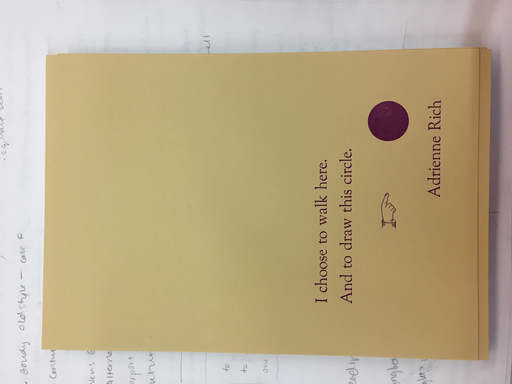

Timing Joy with the Profile Picture Timer
The Studio Space is a socially-motivated time tracking feature. How do we make tracking your creativity a joy and a motivation in itself?
For our Studio Space feature, we needed a profile picture that visually communicated the time that a user spent creating, and also added an element of delight when they hit their goal. Delight and encouragement were the point, so Jeff Wang pulled out all the stops when creating this one! Here’s a demo, showing various states of the profile picture feature:
The most complex part was managing the state of the timer ring on the profile picture. This writeup is still under construction, but stay tuned for a deep dive into the SVG manipulation that makes this timer tick—literally.